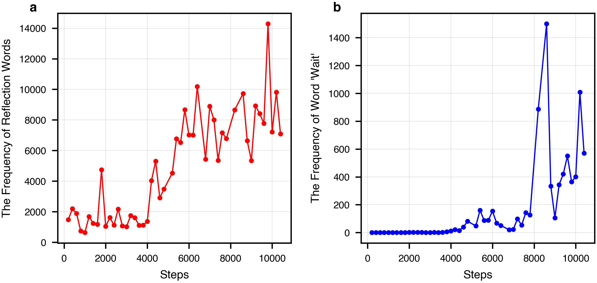
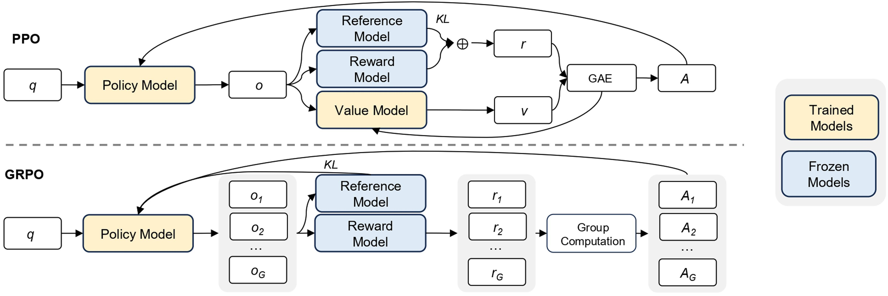
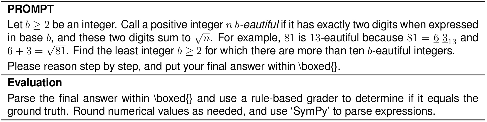

[文章]
[DeepSeek-R1通过强化学习激励大语言模型的推理能力]
https://doi.org/10.1038/s41586-025-09422-z
收稿日期：2025年2月14日 通用推理代表了人工智能(AI)领域一个长期存在且艰难的挑战。最近的突破，以大语言模型(LLMs)和思维链(CoT)提示为例，在基础推理任务上取得了相当大的成功。然而，这种成功在很大程度上依赖于
接受日期：2025年7月17日
在线发表：2025年9月17日 大量的人工标注演示，模型的能力仍然不足以解决更复杂的问题。在这里我们展示了LLMs的推理
开放获取 能力可以通过纯强化学习(RL)来激励，
避免了对人工标注推理轨迹的需求。所提出的RL

框架促进了高级推理模式的涌现发展，
如自我反思、验证和动态策略适应。因此，
训练后的模型在可验证任务上取得了卓越的性能，如
数学、编程竞赛和STEM领域，超越了通过
传统监督学习训练的同类模型。
此外，这些大规模模型表现出的涌现推理模式
可以系统性地用于指导和增强
小型模型的推理能力。
推理能力是人类智能的基石，使得复杂的认知任务成为可能，从数学问题解决到逻辑推理和编程。人工智能的最新进展表明，LLMs在扩展到足够大的规模时可以表现出涌现行为，包括推理能力。然而，在预训练中实现这种能力通常需要大量的计算资源。与此同时，一条互补的研究路线表明，LLMs可以通过CoT提示得到有效增强。这种技术，通过提供精心设计的少样本示例或使用最简化的提示如”让我们一步步思考”，使模型能够产生中间推理步骤，从而大幅提升它们在复杂任务上的性能。类似地，当模型在后训练阶段学习高质量的多步推理轨迹时，也观察到了进一步的性能提升。尽管有效，这些方法表现出显著的局限性。它们对人工标注推理轨迹的依赖减慢了可扩展性并引入了认知偏见。此外，通过约束模型复制人类思维过程，它们的性能本质上受到人类提供的示例的限制，这阻止了对优越的、非人类类推理路径的探索。
而不受限制的RL训练可以更好地激励LLMs中新推理能力的涌现。通过这个过程，在下一节详述，我们的模型(称为DeepSeek-R1-Zero)自然地发展出多样化和复杂的推理行为。为了解决推理问题，模型表现出生成更长响应的倾向，在每个响应中包含验证、反思和替代方法的探索。尽管我们没有明确教授模型如何推理，它通过RL成功学习了改进的推理策略。
尽管DeepSeek-R1-Zero展示了优秀的推理能力，但它面临着可读性差和语言混合等挑战，偶尔在单个CoT响应中混合英语和中文。此外，DeepSeek-R1-Zero基于规则的RL训练阶段狭隘地专注于推理任务，导致在更广泛的领域如写作和开放域问答中性能有限。为了解决这些挑战，我们引入了DeepSeek-R1，一个通过多阶段学习框架训练的模型，该框架整合了拒绝采样、RL和监督微调，在’DeepSeek-R1’部分详述。这个训练流程使DeepSeek-R1能够继承其前身DeepSeek-R1-Zero的推理能力，同时通过进一步的非推理数据使模型行为与人类偏好保持一致。
为了在更低的能源成本下提供更广泛的强大AI访问，我们蒸馏了几个较小的模型并将其公开发布。这些蒸馏模型表现出强大的推理能力，超越了其原始指令调优对应模型的性能。我们相信这些指令调优版本也将通过提供宝贵的资源来理解长CoT推理模型的潜在机制以及促进更强大推理模型的发展，为研究社区做出巨大贡献。我们发布了DeepSeek-R1-Zero、DeepSeek-R1、数据样本和蒸馏
人类定义的推理模式可能限制模型探索，[在”代码可用性”部分中描述的向公众提供的模型。]
[作者列表及其所属机构出现在论文末尾。]
Nature | Vol 645 | 18 September 2025 | 633 [文章]
a b [训练期间DeepSeek-R1-Zero的AIME准确率] [训练期间DeepSeek-R1-Zero每次响应的平均长度]
[0.9]
[r1-zero-pass@1] [20,000] [r1-zero-cons@16]
[0.8] [人类参与者]
[17,500]
[0.7] [15,000]
[0.6] [12,500]
[0.5] [10,000]
[准确率]
[0.4] [7,500]
[每次响应的平均长度] [5,000]
[0.3]
[2,500]
[0.2]
[0]
[0] [2,000] [4,000] [6,000] [8,000] [10,000] [0] [2,000] [4,000] [6,000] [8,000] [10,000]
[步骤] [步骤]
图1 | DeepSeek-R1-Zero在整个训练过程中的准确率和输出长度。a，DeepSeek-R1-Zero在训练期间的AIME准确率。AIME 将数学问题作为输入，数字作为输出，如扩展数据表1所示。pass@1和cons@16在补充信息第4.1节中描述。基线是AIME竞赛中人类参与者取得的平均分数。b，DeepSeek-R1-Zero在RL过程中训练集上的平均响应长度。DeepSeek-R1-Zero自然地学会用更多的思考时间来解决推理任务。注意，一个训练步骤指的是单个策略更新操作。
为了实现DeepSeek-R1-Zero的大规模RL，我们使用高效的RL管道。具体来说，我们使用GRPO作为我们的RL算法，在方法部分的”GRPO”中描述。此外，我们使用基于规则的奖励系统来计算准确性和格式奖励，详细方法在方法部分的”奖励设计”中概述。此外，我们的高性能RL基础设施在补充信息第2.1节中描述，确保可扩展和高效的训练。
具体来说，我们在DeepSeek-V3 Base上应用RL技术来训练DeepSeek-R1-Zero。在训练期间，我们设计了一个直观的模板，要求DeepSeek-R1-Zero首先生成推理过程，然后给出最终答案。提示模板如下所示：
“用户和助手之间的对话。用户提出问题，助手解决问题。助手首先在脑海中思考推理过程，然后向用户提供答案。推理过程和答案分别包含在<think>…</think>和<answer>…</answer>标签内，即推理过程在这里答案在这里。用户：提示。助手：”，其中在训练期间用具体的推理问题替换提示。我们有意将约束限制在这种结构格式上，避免任何内容特定的偏见，以确保我们能够准确观察模型在RL过程中的自然进展。
图1a显示了DeepSeek-R1-Zero在美国邀请数学考试(AIME) 2024基准测试中在整个RL训练过程中的性能轨迹，其中AIME 2024的平均pass@1分数显示出显著提升，从初始值15.6%跳跃到77.9%。此外，通过使用自一致性解码，模型的性能可以进一步提升，达到86.7%的准确率。这种性能大大超过了AIME所有人类竞争者的平均表现。除了数学竞赛，如补充图8所示，DeepSeek-R1-Zero在编程竞赛和研究生水平的生物学考试中也取得了卓越的性能。
在训练期间，DeepSeek-R1-Zero还展现出自我进化行为和RL训练。如图1b所示，除了推理能力的逐步增强，DeepSeek-R1-Zero在整个训练过程中表现出思考时间的稳定增长，这仅由内在适应而非外部修改驱动。利用长链式思维(CoT)，模型逐步完善其推理，生成数百到数千个词元来探索和改进其问题解决策略。
思考时间的增加有助于复杂行为的自主发展。具体来说，DeepSeek-R1-Zero越来越多地展现出高级推理策略，如反思性推理和对替代解决方案的系统性探索，这在扩展数据图1a中提供，显著提升了其在数学和编程等可验证任务上的表现。值得注意的是，在训练期间，DeepSeek-R1-Zero表现出”顿悟时刻”，如表1所示，其特征是在反思过程中突然增加”等等”一词的使用，这在扩展数据图1b中提供。这一时刻标志着推理模式的明显变化，清楚地显示了DeepSeek-R1-Zero的自我进化过程。
DeepSeek-R1-Zero的自我进化凸显了RL的力量和美感：我们不是明确教授模型如何解决问题，而是简单地为其提供正确的激励，它就会自主发展出高级的问题解决策略。这提醒我们RL在释放LLM更高层次能力方面的潜力，为未来更加自主和适应性的模型铺平了道路。
尽管DeepSeek-R1-Zero展现出强大的推理能力，但它面临几个问题。DeepSeek-R1-Zero在可读性差和语言混合等挑战方面存在困难，因为DeepSeek-V3 Base是在多种语言上训练的，特别是英语和中文。为了解决这些问题，我们开发了DeepSeek-R1，其管道在图2中描述。在初始阶段，我们收集了数千个冷启动数据，这些数据展现出对话式的、与人类一致的思维过程，详细信息在补充信息第2.3.2节中。RL训练
生物、物理和化学问题。这些结果强调了强化学习在增强大语言模型推理能力方面的有效性。
634 | Nature | Vol 645 | 2025年9月18日
表1 | DeepSeek-R1-Zero中间版本的一个有趣的”顿悟时刻”
问题：如果 a > 1，那么 a - ax + = x 的实数解之和等于
回答：为了求解方程 a - ax + = x，让我们从平方开始… (a - ax +)² = x ⟹ a - ax + = x²
重新排列以分离内部平方根项： (ax -)² = + axa ⟹ - 2ax + (x)² = + axx ⟹ - 2ax - + xa (- = a) 0 …
等等，等等。等等。这是我可以标记的一个顿悟时刻。让我们重新逐步评估这个问题，以确定正确的和是否可以… 我们从方程开始： a - ax + = x 首先，让我们两边平方： a - ax + = x² ⟹ axa + = - 接下来，我可以再次两边平方，处理方程：… … 模型学会使用拟人化的语调重新思考。这对我们来说也是一个顿悟时刻，让我们见证了强化学习的力量和美丽。
随后，我们再次应用拒绝采样和监督微调。这一阶段将推理和非推理数据集都纳入监督微调过程，如补充信息第2.3.3节所详述，使模型不仅在推理任务中表现出色，还展现出先进的写作能力。为了进一步使模型与人类偏好保持一致，我们实施了第二个强化学习阶段，旨在增强模型的有用性和无害性，同时完善其推理能力。奖励模型在方法部分”奖励设计”中描述，强化学习超参数在方法部分”第二个强化学习阶段的训练细节”中描述。总训练成本在补充信息第2.4.4节中列出。
我们在以下基准上评估我们的模型：MMLU、MMLU-Redux、MMLU-Pro、DROP、C-Eval、IFEval、FRAMES、GPQA Diamond、SimpleQA、C-SimpleQA、CLUEWSC、AlpacaEval 2.0、Arena-Hard、SWE-bench Verified、Aider-Polyglot、LiveCodeBench (2024-08–2025-01)、Codeforces、中国高中数学奥林匹克竞赛(CNMO 2024)和AIME 2024。这些基准的详细信息在补充表15-29中提供。
表2总结了DeepSeek-R1在几个发展阶段的性能，如图2所示。DeepSeek-R1-Zero和DeepSeek-R1 Dev1之间的比较显示了在指令遵循方面的实质性改进，IF-Eval和Arena-Hard基准上的更高分数证明了这一点。然而，由于冷启动数据集的规模有限，Dev1与DeepSeek-R1-Zero相比在推理性能方面表现出部分退化，最显著的是在AIME基准上。相比之下，DeepSeek-R1 Dev2在需要高级推理技能的基准上表现出显著的性能提升，包括那些专注于代码生成、数学问题解决和STEM相关任务的基准。针对通用任务的基准，如AlpacaEval 2.0，显示出边际改进。这些结果表明，面向推理的强化学习大大增强了推理能力，同时对面向用户偏好的基准影响有限。
DeepSeek-R1 Dev3将推理和非推理数据集都整合到监督微调流水线中，从而增强了模型在推理和一般语言生成任务中的熟练程度。与Dev2相比，DeepSeek-R1 Dev3在AlpacaEval 2.0和Aider-Polyglot上取得了显著的性能改进，这归因于大规模非推理语料库和代码工程数据集的纳入。最后，在DeepSeek-R1 Dev3上使用混合推理重点和通用数据进行全面的强化学习训练产生了最终的DeepSeek-R1。代码和数学基准上出现了边际改进，因为在之前的阶段已经进行了大量特定于推理的强化学习。最终DeepSeek-R1的主要进步在于一般指令遵循和用户偏好基准，AlpacaEval 2.0提高了25%，Arena-Hard提高了17%。
我们还在补充信息第4.2节中将DeepSeek-R1与其他模型进行比较。模型安全评估在补充信息第4.3节中提供。评估的全面分析在补充信息第5节中提供，包括与DeepSeek-V3的比较、在新鲜测试集上的性能评估、按类别分解的数学能力以及测试时间缩放行为的调查。补充信息第6节显示，强大的推理能力可以转移到较小的模型中。
DeepSeek-V3 DeepSeek-V3 Base DeepSeek-V3 Base
强化学习 | 监督微调监督微调
推理提示 | 非推理冷启动长CoT | 采样准确性和格式 | 模型 | 推理提示+响应
DeepSeek-R1-Zero | DeepSeek-R1 Dev1 | DeepSeek-R1 Dev3 | 训练算法提示
采样 | 奖励 | 强化学习 | 强化学习
推理提示 | 多样化提示 | 后处理推理提示
图2 | DeepSeek-R1的多阶段管道。 关于DeepSeek-V3 Base和DeepSeek-V3的详细背景请参见补充信息第1.1节。模型DeepSeek-R1 Dev1、Dev2和Dev3代表此管道中的中间检查点。
Nature | Vol 645 | 18 September 2025 | 635 文章
表2 | DeepSeek-R1各阶段的实验结果
| 基准测试（指标） | R1-Zero | R1 Dev1 | R1 Dev2 | R1 Dev3 | R1 |
|---|---|---|---|---|---|
| 英语 | |||||
| MMLU (EM) | 88.8 | 89.1 | 91.2 | 91.0 | 90.8 |
| MMLU-Redux (EM) | 85.6 | 90.0 | 93.0 | 93.1 | 92.9 |
| MMLU-Pro (EM) | 68.9 | 74.1 | 83.8 | 83.1 | 84.0 |
| DROP (3-shot F1) | 89.1 | 89.8 | 91.1 | 88.7 | 92.2 |
| IF-Eval (Prompt Strict) | 46.6 | 71.7 | 72.0 | 78.1 | 83.3 |
| GPQA Diamond (Pass@1) | 75.8 | 66.1 | 70.7 | 71.2 | 71.5 |
| SimpleQA (Correct) | 30.3 | 17.8 | 28.2 | 24.9 | 30.1 |
| FRAMES (Acc.) | 82.3 | 78.5 | 81.8 | 81.9 | 82.5 |
| AlpacaEval 2.0 (LC-winrate) | 24.7 | 50.1 | 55.8 | 62.1 | 87.6 |
| Arena-Hard (GPT-4-1106) | 53.6 | 77.0 | 73.2 | 75.6 | 92.3 |
| 代码 | |||||
| LiveCodeBench (Pass@1-COT) | 50.0 | 57.5 | 63.5 | 64.6 | 65.9 |
| Codeforces (Percentile) | 80.4 | 84.5 | 90.5 | 92.1 | 96.3 |
| Codeforces (Rating) | 1,444 | 1,534 | 1,687 | 1,746 | 2,029 |
| SWE-bench Verified (Resolved) | 43.2 | 39.6 | 44.6 | 45.6 | 49.2 |
| Aider-Polyglot (Acc.) | 12.2 | 6.7 | 25.6 | 44.8 | 53.3 |
| 数学 | |||||
| AIME 2024 (Pass@1) | 77.9 | 59.0 | 74.0 | 78.1 | 79.8 |
| MATH-500 (Pass@1) | 95.9 | 94.2 | 95.9 | 95.4 | 97.3 |
| CNMO 2024 (Pass@1) | 88.1 | 58.0 | 73.9 | 77.3 | 78.8 |
| 中文 | |||||
| CLUEWSC (EM) | 93.1 | 92.8 | 92.6 | 91.6 | 92.8 |
| C-Eval (EM) | 92.8 | 85.7 | 91.9 | 86.4 | 91.8 |
| C-SimpleQA (Correct) | 66.4 | 58.8 | 64.2 | 66.9 | 63.7 |
粗体数字表示性能具有统计显著性（t检验，P < 0.01）。
随着DeepSeek-R1推理能力的提升，我们深刻认识到潜在的伦理风险。例如，R1可能受到越狱攻击，导致生成危险内容，如爆炸物制造计划，而增强的推理能力使模型能够提供操作性和可执行性更好的计划。此外，公开模型也容易受到进一步微调的影响，可能会损害固有的安全保护。
在补充信息第4.3节中，我们从多个角度提供了全面的安全报告，包括在开源和内部安全评估基准上的性能，以及在多种语言和越狱攻击方面的安全级别。这些全面的安全分析得出结论，与其他最先进的模型相比，DeepSeek-R1模型的固有安全级别总体处于适中水平（与GPT-4o (2024-05-13)相当）。此外，当与风险控制系统结合使用时，模型的安全级别提升到了更高标准。
我们提出了DeepSeek-R1-Zero和DeepSeek-R1，它们依靠大规模强化学习来激励模型推理行为。我们的结果表明，预训练检查点固有地具有处理复杂推理任务的巨大潜力。我们相信，释放这种潜力的关键不在于大规模人工标注，而在于提供困难的推理问题、可靠的验证器和充足的强化学习计算资源。复杂的推理行为，如自我验证和反思，似乎在强化学习过程中有机地出现。
尽管DeepSeek-R1在推理基准测试中取得了前沿结果，但它仍然面临一些能力局限性，如下所述：
目前，DeepSeek-R1的结构化输出能力与现有模型相比仍然次优。此外，DeepSeek-R1无法使用搜索引擎和计算器等工具来提高输出性能。然而，由于为结构化输出和工具使用构建强化学习环境并不困难，我们相信这个问题将在下一个版本中得到解决。
与传统的测试时计算扩展方法（如多数投票或蒙特卡洛树搜索(MCTS)）不同，DeepSeek-R1根据手头问题的复杂性在推理过程中动态分配计算资源。具体来说，它使用较少的令牌来解决简单任务，但为复杂任务生成更多令牌。尽管如此，在令牌效率方面仍有进一步优化的空间，因为在回应简单问题时仍然观察到过度推理的实例——表现为过度思考。
DeepSeek-R1目前针对中文和英文进行了优化，在处理其他语言的查询时可能会导致语言混合问题。例如，即使查询是英文或中文以外的语言，DeepSeek-R1也可能使用英文进行推理和回应。我们的目标是在未来的更新中解决这一局限性。这一局限性可能与基础检查点DeepSeek-V3 Base有关，它主要使用中文和英文，因此在推理中使用这两种语言能够取得更好的结果。
在评估DeepSeek-R1时，我们观察到它对提示很敏感。少样本提示始终会降低其性能。因此，我们建议用户直接描述问题。
由于冗长的评估时间影响了强化学习过程的效率，大规模强化学习尚未在软件工程任务中得到广泛应用。因此，DeepSeek-R1在软件工程基准测试上相比DeepSeek-V3并未展现出巨大改进。未来版本将通过在软件工程数据上实施拒绝采样或在强化学习过程中整合异步评估来提高效率，从而解决这一问题。
除了特定能力限制之外，纯强化学习方法本身也存在固有挑战：
纯强化学习的成功依赖于可靠的奖励信号。在本研究中，我们通过基于推理领域规则的奖励模型来确保奖励可靠性。然而，对于某些任务（如写作），构建如此可靠的奖励模型是困难的。如果奖励信号由模型分配而非预定义规则，随着训练进展它会变得更容易被利用，这意味着策略模型可能找到欺骗奖励模型的捷径。因此，对于无法通过可靠奖励模型有效评估的复杂任务，扩展纯强化学习方法仍然是一个开放性挑战。
在本工作中，对于无法获得可靠信号的任务，DeepSeek-R1使用人工标注创建监督数据，并仅进行数百步的强化学习。我们希望未来能够获得鲁棒的奖励模型来解决此类问题。
随着DeepSeek-R1等纯强化学习方法的出现，未来在解决任何能够被验证器有效评估的任务方面具有巨大潜力，无论该任务对人类而言多么复杂。配备此类先进强化学习技术的机器有望在这些领域超越人类能力，这得益于它们通过试错迭代优化性能的能力。然而，
软件工程任务
对于构建可靠奖励模型本身就困难的任务，挑战仍然存在。在这种情况下，缺乏强健的反馈机制可能会减缓进展，这表明未来的研究应该专注于开发创新方法来定义和改进这些复杂、难以验证问题的奖励结构。
此外，在推理过程中使用工具具有显著的前景。无论是使用编译器或搜索引擎等工具来检索或计算必要信息，还是使用生物或化学试剂等外部工具在现实世界中验证最终结果，这种工具增强推理的集成都可以大大增强机器驱动解决方案的范围和准确性。
任何方法、附加参考文献、Nature Portfolio报告摘要、源数据、扩展数据、补充信息、致谢、同行评议信息；作者贡献和利益冲突的详细信息；以及数据和代码可用性声明都可在 https://doi.org/10.1038/s41586-025-09422-z 获取。
[1. Brown, T. B. et al. Language models are few-shot learners. In Advances in Neural Information Processing Systems 33 (eds Larochelle, H. et al.) (ACM, 2020).]
[2. OpenAI et al. GPT4 technical report. Preprint at https://doi.org/10.48550/arXiv.2303.08774 (2024).]
[3. Wei, J. et al. Chain-of-thought prompting elicits reasoning in large language models. In Advances in Neural Information Processing Systems 35 (eds Koyejo, S. et al.) 24824–24837 (ACM, 2022).]
[4. Wei, J. et al. Emergent abilities of large language models. In Transactions on Machine Learning Research (eds Kamath, G. et al.) (2022).]
[5. Kaplan, J. et al. Scaling laws for neural language models. Preprint at https://doi.org/10.48550/arXiv.2001.08361 (2020).]
[24. OpenAI. Introducing SWE-bench Verified; https://openai.com/index/introducing-swe-bench-verified/ (2024).]
[25. Aider. Aider LLM leaderboards; https://aider.chat/docs/leaderboards/ (2024).]
[26. Jain, N. et al. LiveCodeBench: holistic and contamination free evaluation of large language models for code. In 13th International Conference on Learning Representations (ICLR, 2024).]
[27. Mirzayanov, M. Codeforces; https://codeforces.com/ (2025).]
[28. Chinese Mathematical Society (CMS). Chinese National High School Mathematics Olympiad; https://www.cms.org.cn/Home/comp/comp/cid/12.html (2024).]
[29. Mathematical Association of America. American Invitational Mathematics Examination; https://maa.org/maa-invitational-competitions (2024).]
[30. OpenAI. Hello GPT-4o; https://openai.com/index/hello-gpt-4o/ (2024).]
出版商说明 Springer Nature对于已发表地图和机构隶属关系中的管辖权声明保持中立。
开放获取 本文章根据知识共享署名4.0国际许可证授权，该许可证允许在任何媒体或格式中使用、共享、改编、分发和复制，只要您适当署名原作者和来源，提供知识共享许可证的链接，并说明是否进行了修改。本文章中的图片或其他第三方材料包含在文章的知识共享许可证中，除非在材料的署名行中另有说明。如果材料未包含在文章的知识共享许可证中，且您的预期用途不被法定法规允许或超出了允许的用途，您需要直接从版权持有者处获得许可。要查看此许可证的副本，请访问 http://creativecommons.org/licenses/by/4.0/。
© 作者 2025
Daya Guo¹, Dejian Yang¹, Haowei Zhang¹, Junxiao Song¹, Peiyi Wang¹, Qihao Zhu¹, Runxin Xu¹, Ruoyu Zhang¹, Shirong Ma¹, Xiao Bi¹, Xiaokang Zhang¹, Xingkai Yu¹, Yu Wu¹, Z. F. Wu¹, Zhibin Gou¹, Zhihong Shao¹, Zhuoshu Li¹, Ziyi Gao¹, Aixin Liu¹, Bing Xue¹, Bingxuan Wang¹, Bochao Wu¹, Bei Feng¹, Chengda Lu¹, Chenggang Zhao¹, Chengqi Deng¹, Chong Ruan¹, Damai Dai¹, Deli Chen¹, Dongjie Ji¹, Erhang Li¹, Fangyun Lin¹, Fucong Dai¹, Fuli Luo¹,², Guangbo Hao¹, Guanting Chen¹, Guowei Li¹, H. Zhang¹, Hanwei Xu¹, Honghui Ding¹, Huazuo Gao¹, Hui Qu¹, Hui Li¹, Jianzhong Guo¹, Jiashi Li¹, Jingchang Chen¹, Jingyang Yuan¹, Jinhao Tu¹,³, Junjie Qiu¹, Junlong Li¹, J. L. Cai¹, Jiaqi Ni¹, Jian Liang¹, Jin Chen¹, Kai Dong¹, Kai Hu¹,⁴, Kaichao You¹, Kaige Gao¹, Kang Guan¹, Kexin Huang¹,⁵, Kuai Yu¹, Lean Wang¹, Lecong Zhang¹, Liang Zhao¹, Litong Wang¹, Liyue Zhang¹, Lei Xu¹, Leyi Xia¹,
[6. Kojima, T., Gu, S. S., Reid, M., Matsuo, Y. & Iwasawa, Y. 大型语言模型是零样本] [Mingchuan Zhang][1][, Minghua Zhang][1][, Minghui Tang][1][, Mingxu Zhou][1][, Meng Li][1][, ]
[推理器。在 神经信息处理系统进展 35 (eds Oh, A. H. et al.) ] [Miaojun Wang][1][, Mingming Li][1][, Ning Tian][1][, Panpan Huang][1][, Peng Zhang][1][, Qiancheng Wang][1][, ] [22199–22213 (ACM, 2022).] [Qinyu Chen][1][, Qiushi Du][1][, Ruiqi Ge][1][, Ruisong Zhang][1][, Ruizhe Pan][1][, Runji Wang][1][, R. J. Chen][1][, ]
Nature | 第645卷 | 2025年9月18日 | 637 [文章]
[R. L. Jin][1][, Ruyi Chen][1][, Shanghao Lu][1][, Shangyan Zhou][1][, Shanhuang Chen][1][, Shengfeng Ye][1][, ] [Yanping Huang][1][, Yaohui Li][1][, Yi Zheng][1][, Yuchen Zhu][1][, Yunxian Ma][1][, Ying Tang][1][, Yukun Zha][1][, ] [Shiyu Wang][1][, Shuiping Yu][1][, Shunfeng Zhou][1][, Shuting Pan][1][, S. S. Li][1][, Shuang Zhou][1][, ] [Yuting Yan][1][, Z. Z. Ren][1][, Zehui Ren][1][, Zhangli Sha][1][, Zhe Fu][1][, Zhean Xu][1][, Zhenda Xie][1][, ] [Shaoqing Wu][1][, Tao Yun][1][, Tian Pei][1][, Tianyu Sun][1][, T. Wang][1][, Wangding Zeng][1][, Wen Liu][1][, ] [Zhengyan Zhang][1][, Zhewen Hao][1][, Zhicheng Ma][1][, Zhigang Yan][1][, Zhiyu Wu][1][, Zihui Gu][1][, Zijia Zhu][1][, ] [Wenfeng Liang][1] [✉][, Wenjun Gao][1][, Wenqin Yu][1,5][, Wentao Zhang][1][, W. L. Xiao][1][, Wei An][1][, ] [Zijun Liu][1,6][, Zilin Li][1][, Ziwei Xie][1][, Ziyang Song][1,7][, Zizheng Pan][1][, Zhen Huang][1][, Zhipeng Xu][1][, ] [Xiaodong Liu][1][, Xiaohan Wang][1][, Xiaokang Chen][1][, Xiaotao Nie][1][, Xin Cheng][1][, Xin Liu][1][, Xin Xie][1][, ] [Zhongyu Zhang][1][ & Zhen Zhang][1] [Xingchao Liu][1][, Xinyu Yang][1][, Xinyuan Li][1,5][, Xuecheng Su][1][, Xuheng Lin][1][, X. Q. Li][1][, Xiangyue Jin][1][, ] [Xiaojin Shen] [1] [1] [1] [1] [1] [1] [, Xiaosha Chen] [, Xiaowen Sun] [, Xiaoxiang Wang] [, Xinnan Song] [, Xinyi Zhou][, ]
[1] [2] [DeepSeek-AI团队，中国杭州。][目前地址：独立研究员，中国北京。]
[Xianzu Wang] [1] [1] [1] [1] [1] [1] [1] [, Xinxia Shan] [, Y. K. Li] [, Y. Q. Wang] [, Y. X. Wei] [, Yang Zhang] [, Yanhong Xu][, ] [Yao Li] [3] [4] [目前地址：上海建平中学，中国上海。][目前地址：] [, Yao Zhao] [, Yaofeng Sun] [, Yaohui Wang] [, Yi Yu] [, Yichao Zhang] [, Yifan Shi] [, ]
[1] [1] [1] [1] [1] [1] [1]
[Yiliang Xiong][1][, Ying He][1][, Yishi Piao][1][, Yisong Wang][1][, Yixuan Tan][1][, Yiyang Ma][1][, Yiyuan Liu][1] [中国科学技术大学，中国合肥。][5][目前地址：北京大学，中国北京，][, ] [Yongqiang Guo][1][, Yuan Ou][1][, Yuduan Wang][1][, Yue Gong][1,5][, Yuheng Zou][1][, Yujia He][1,5][, ] [中国。][6][目前地址：清华大学，中国北京。][7][目前地址：城堡]
[Yunfan Xiong] [✉] [1] [, Yuxiang Luo] [1] [, Yuxiang You] [1] [, Yuxuan Liu] [1] [, Yuyang Zhou] [1] [, Y. X. Zhu] [1] [, ] [证券，中国香港特别行政区。][邮箱：wenfeng.liang@deepseek.com]
638 | Nature | 第645卷 | 2025年9月18日
此外，重新训练此类模型需要大量计算资源，并为训练流程引入进一步复杂性，从而使整体优化过程变得复杂。
GRPO[[9]]是我们用来训练DeepSeek-R1-Zero和DeepSeek-R1的RL算法。它最初被提出是为了简化训练过程并减少近端策略优化(PPO)[31]的资源消耗，PPO在LLMs的RL阶段被广泛使用[[32]]。GRPO的流程如扩展数据图2所示。
对于每个问题q，GRPO从旧策略[π][θ][old]中采样一组输出{o[1], o[2],…, o[G]}，然后通过最大化以下目标来优化策略模型π[θ]：
[G] JGRPO = E[q ∼ P(Q), {o[i]}[i=1] ∼ π[θ][old](O|q)]
基于模型的奖励。 对于一般数据，我们依赖奖励模型来捕获复杂和细致场景中的人类偏好。我们建立在DeepSeek-V3流程的基础上，使用类似的偏好对分布和训练提示。对于有用性，我们专门关注最终总结，确保评估强调响应对用户的使用和相关性，同时最小化对潜在推理过程的干扰。对于无害性，我们评估模型的整个响应，包括推理过程和总结，以识别和减轻任何潜在风险、偏见或
有害内容可能在生成过程中出现。
π_θ(o|q_i)与π_θ_old(o|q_i)的比较公式如下：
min A_i, clip[π_θ(o|q_i)/π_θ_old(o|q_i), 1-ε, 1+ε] A_i (1)
其中包含KL散度项：-β D_KL(π_θ || π_ref) (2)
其中π_ref是参考策略，ε和β是超参数，A_i是优势，使用一组奖励{r_1, r_2, …, r_G}对应每组输出进行计算：
A_i = (r_i - mean({r_1, r_2, …, r_G})) / std({r_1, r_2, …, r_G}) (3)
我们在补充信息第1.3节中给出了GRPO和PPO的比较。
奖励是训练信号的来源，决定了强化学习优化的方向。对于DeepSeek-R1-Zero，我们使用基于规则的奖励为数学、编程和逻辑推理领域的数据提供精确反馈。对于DeepSeek-R1，我们扩展了这种方法，既为推理导向的数据使用基于规则的奖励，又为一般数据使用基于模型的奖励，从而增强学习过程在不同领域的适应性。
我们基于规则的奖励系统主要包含两种类型的奖励：准确性奖励和格式奖励。
准确性奖励评估回答是否正确。例如，对于具有确定性结果的数学问题，模型需要以指定格式提供最终答案（例如，在框内），从而能够基于规则可靠地验证正确性。类似地，对于代码竞赛提示，可以使用编译器根据一套预定义的测试用例评估模型的回答，从而生成关于正确性的客观反馈。
格式奖励通过强制执行特定的格式要求来补充准确性奖励模型。特别是，模型被激励将其推理过程封装在指定的标签内，具体是
Reward_rule = Reward_acc + Reward_format (4)
准确性奖励和格式奖励以相同的权重组合。值得注意的是，我们避免将神经奖励模型——无论是基于结果的还是基于过程的——应用于推理任务。这一决定基于我们的观察，即神经奖励
对于有用奖励模型训练，我们首先使用Arena-Hard提示格式生成偏好对，该格式在补充信息第2.2节中列出，每对包含一个用户查询以及两个候选回答。对于每个偏好对，我们查询DeepSeek-V3四次，随机分配回答为回答A或回答B以减轻位置偏差。最终的偏好分数通过平均四个独立判断来确定，仅保留分数差异(Δ)超过1的对以确保有意义的区别。此外，为了最小化长度相关的偏差，我们确保整个数据集的选择和拒绝回答具有可比较的长度。总共，我们为训练奖励模型策划了66,000个数据对。该数据集中使用的提示都是非推理问题，来源于公开可用的开源数据集或明确同意共享其数据用于模型改进目的的用户。我们奖励模型的架构与DeepSeek-R1一致，增加了一个旨在预测标量偏好分数的奖励头。
Reward_helpful = RM_helpful(Response_A, Response_B) (5)
有用奖励模型使用批量大小256、学习率6×10^-6训练一个epoch。训练期间的最大序列长度设置为8,192个token，而在奖励模型推理期间没有施加明确限制。
为了评估和改进模型安全性，我们策划了一个包含106,000个提示的数据集，其中模型生成的回答根据预定义的安全准则被标注为”安全”或”不安全”。与有用性奖励模型中使用的成对损失不同，安全奖励模型使用点式方法进行训练，以区分安全和不安全的回答。训练超参数与有用奖励模型相同。
Reward_safety = RM_safety(Response) (6)
对于一般查询，每个实例被分类为属于安全数据集或有用性数据集。分配给每个查询的一般奖励Reward_general对应于相关数据集中定义的相应奖励。
为了训练DeepSeek-R1-Zero，我们将学习率设置为3×10^-6，Kullback-Leibler (KL)系数设置为0.001，推出的采样温度设置为1。对于每个问题，我们在8.2k步之前采样16个输出，最大长度为32,768个token，之后为65,536个token。因此，DeepSeek-R1-Zero的性能和回答长度在8.2k步时都表现出显著跳跃，训练总共持续10,400步，对应1.6个训练epoch。每个训练步骤包含32个独特问题，导致训练批量大小
模型在大规模强化学习(RL)期间容易受到奖励黑客攻击的影响。每步512个。每400步，我们用最新的策略模型替换参考模型。为了加速训练，每次推出生成8,192个输出，这些输出被随机分成16个小批次，仅训练一个内部轮次。
第一阶段强化学习的训练细节。 在强化学习的第一阶段，我们将学习率设置为3 × 10^-6，KL系数设为0.001，GRPO剪切比率ε设为10，推出的采样温度设为1。对于每个问题，我们采样16个输出，最大长度为32,768。每个训练步骤包含32个独特问题，导致每步训练批次大小为512。每400步，我们用最新的策略模型替换参考模型。为了加速训练，每次推出生成8,192个输出，这些输出被随机分成16个小批次，仅训练一个内部轮次。然而，为了减轻语言混合问题，我们在强化学习训练期间引入了语言一致性奖励，该奖励计算为思维链(CoT)中目标语言词汇的比例。
奖励 = 目标语言词数(7) / 总词数
尽管补充信息第2.6节中的消融实验显示这种对齐会导致模型性能略有下降，但这种奖励符合人类偏好，使其更具可读性。我们通过直接将语言一致性奖励添加到最终奖励中，将其应用于推理和非推理数据。
请注意，剪切比率在训练中起着关键作用。较低的值可能导致大量标记的梯度被截断，从而降低模型性能，而较高的值可能在训练期间造成不稳定性。本阶段使用的强化学习数据详情见补充信息第2.3节。
第二阶段强化学习的训练细节。 具体来说，我们使用奖励信号和多样化提示分布的组合来训练模型。对于推理数据，我们遵循DeepSeek-R1-Zero中概述的方法，该方法使用基于规则的奖励来指导数学、编程和逻辑推理领域的学习。在训练过程中，我们观察到思维链(CoT)经常表现出语言混合现象，特别是当强化学习提示涉及多种语言时。对于一般数据，我们使用奖励模型来指导训练。最终，奖励信号与多样化数据分布的整合使我们能够使用基于模型的偏好奖励信号进行训练步骤可能导致奖励黑客攻击，这在补充信息第2.5节中有记录。
我们在https://github.com/deepseek-ai/DeepSeek-R1 (https://doi.org/10.5281/zenodo.15753193)提供了拒绝采样和强化学习中使用的数据样本。我们完整数据生成方法的综合统计和详细信息见补充信息第2.3节。
DeepSeek-R1-Zero和DeepSeek-R1的训练权重在MIT许可证下可在https://github.com/deepseek-ai/DeepSeek-R1获得，发布于https://github.com/deepseek-ai/DeepSeek-V3 (https://doi.org/10.5281/zenodo.15753347)。推理脚本在(https://doi.org/10.5281/zenodo.15753193)发布。神经网络使用PyTorch开发，分布式框架基于我们的内部框架HAI-LLM (https://www.high-flyer.cn/en/blog/hai-llm)。推理框架基于vLLM。数据分析使用Python v.3.8 (https://www.python.org/)、NumPy v.1.23.1 (https://github.com/numpy/numpy)、Matplotlib v.3.5.2 (https://github.com/matplotlib/matplotlib)和TensorBoard v.2.9.1 (https://github.com/tensorflow/tensorboard)。
Schulman, J., Wolski, F., Dhariwal, P., Radford, A. & Klimov, O. 近端策略优化算法。预印本见https://doi.org/10.48550/arXiv.1707.06347 (2017)。
Ouyang, L. et al. 训练语言模型通过人类反馈来遵循指令。见《神经信息处理系统进展35》(eds Koyejo, S. et al.) 27730–27744 (ACM, 2022)。
Nano et al. deepseek-ai/DeepSeek-R1: v1.0.0. Zenodo https://doi.org/10.5281/zenodo.15753192 (2025)。
Yu, X. et al. deepseek-ai/DeepSeek-V3: v1.0.0. Zenodo https://doi.org/10.5281/zenodo.15753346 (2025)。
Paszke, A. et al. PyTorch：一个命令式风格的高性能深度学习库。见《神经信息处理系统进展32》(eds Wallach, H. M. et al.) 8026–8037 (ACM, 2019)。
Kwon, W. et al. 使用PagedAttention为大型语言模型服务进行高效内存管理。见《ACM SIGOPS第29届操作系统原理研讨会论文集》611–626 (ACM, 2023)。
该研究得到DeepSeek-AI的支持。
开发一个不仅在推理方面表现出色，同时优先考虑有用性和无害性的模型。给定一批数据，奖励可以表述为
奖励 = 奖励_推理 + 奖励_通用 + 奖励_语言 (8)
其中
奖励_推理 = 奖励_规则 (9)
奖励_通用 = 奖励_模型 + 奖励_格式 (10)
RL的第二阶段保留了第一阶段的大部分参数，关键区别是将温度降低到0.7，因为我们发现在这个阶段使用更高的温度会导致生成不连贯的内容。该阶段包含总共1,700个训练步骤，在最后400个步骤中，一般指令数据和基于偏好的奖励被独家融入。我们发现更多

扩展数据图 1 | 推理相关语言特征在训练步骤中的演变。a，代表性反思术语在整个训练过程中在模型生成输出中的频率。反思术语——包括’等等’、‘错误’、‘然而’、‘但是’、‘重试’、‘错误’、‘验证’、‘错误’、‘评估’和’检查’——由三名人类专家小组识别和整理。每位专家独立提出一组表示反思推理的词汇，随后通过共识整合成最终词汇表。b，术语’等等’在训练过程中在模型输出中的频率。该术语在初始训练阶段几乎不存在，在4,000到7,000步之间零星出现，在8,000步后频率显著增加。这些趋势表明随着训练的进展，出现了时间推理或自我监控行为。
文章

扩展数据图 2 | 所提出的基于RL训练的GRPO说明。 在所提出的框架中，LLM被用作策略模型来生成在给定查询q条件下的响应{o₁, o₂, …, oG}。组内每个响应都由奖励模型评估——无论是学习的（基于模型的）还是手动指定的（基于规则的）——来分配标量奖励信号。随后，GRPO根据分配的奖励计算每个组成员的相对优势。GRPO不依赖于显式值函数（如PPO中那样），而是直接从组内奖励分布估计优势。然后更新策略参数以最大化期望奖励，同时最小化与参考策略的分歧，通常通过KL散度量化。通过消除对单独值网络的需求，GRPO为传统的actor-critic方法（如PPO）提供了简化而有效的替代方案。
扩展数据表 1 | AIME数据集的示例

所呈现的问题来源于2024年AIME。模型需要解决该问题并按要求格式（例如，ANSWER）格式化其答案。为了评估，使用基于规则的评分系统来确定正确性。当且仅当模型的输出与真实解完全匹配时，该输出才被认为是正确的。
作者贡献 所有作者都为本出版物做出了贡献，以不同方式参与了数据收集和整理、实验设计和构建LLM训练框架。作者还参与了实施和测试实验设置、完善RL过程以及执行结果分析。科学发现经所有贡献者讨论和批准。本文由合作指定的作者子组（8名作者）撰写，并经历了内部集体审查过程。所有作者审查并批准了手稿的最终版本。核心贡献者：D.G.、D.Y.、H.Z.、J.S.、R.Z.、R.X.、Q.Z.、S.M.、P.W.、X.B.、X.Z.、X.Y.、Y.W.、Z.F.W.、Z.G.、Z.S.、Z.L.、Z.G.。这些作者被指定为核心贡献者，对本工作贡献相等，按字母顺序呈现。其余作者也对研究做出了有意义的贡献，他们的姓名同样按字母顺序呈现。
利益冲突 作者声明无利益冲突，不会就本手稿内容申请专利。
附加信息
补充信息 在线版本包含可在https://doi.org/10.1038/s41586-025-09422-z获得的补充材料。
通信和材料请求 应联系Wenfeng Liang。
同行评议信息 Nature感谢Edward Beeching、Yarin Gal、José Hernández-Orallo、Daphne Ippolito、Subbarao Kambhampati、Lewis Tunstall、Yiming Zhang和Lexin Zhou对本工作同行评议的贡献。同行评议报告可获得。
重印和许可信息 可在http://www.nature.com/reprints获得。